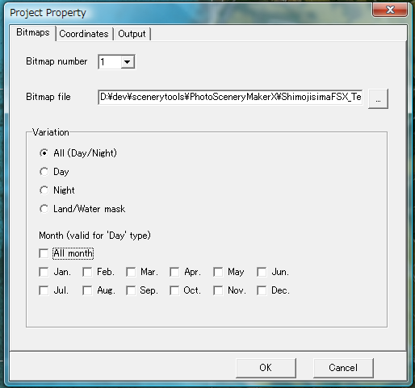
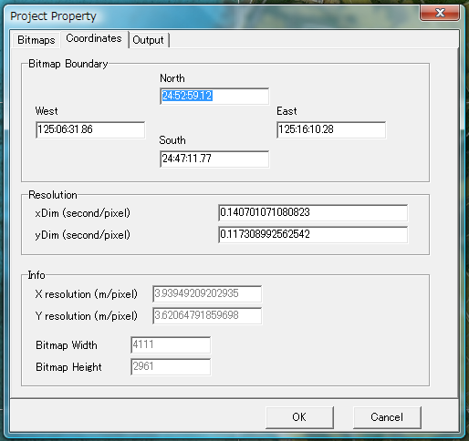
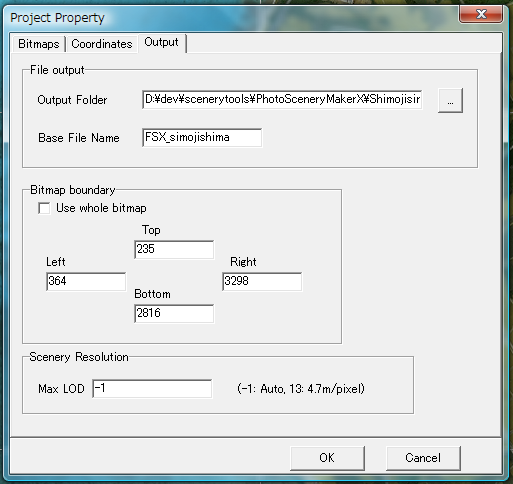

季節/夜間のビットマップを使用しない場合は「季節のサポート」のチェックを外し、 夏のビットマップを指定します。
使用する場合は、「季節のサポート」をチェックし、春、秋、冬、厳冬、ライトマップ（夜間） のビットマップを全て指定してください。
水面（アルファチャネル）のビットマップがある場合は指定してください。ない場合は 空欄にしてください。
なお、これらの値は後述するキャリブレーション機能を使えば自動的に設定されますので、 今は特に何も設定しなくても構いません。

また、ベースファイル名も指定します。これは生成されるシーナリファイル名（BGLファイル）の 名前になります（拡張子を除く）。
